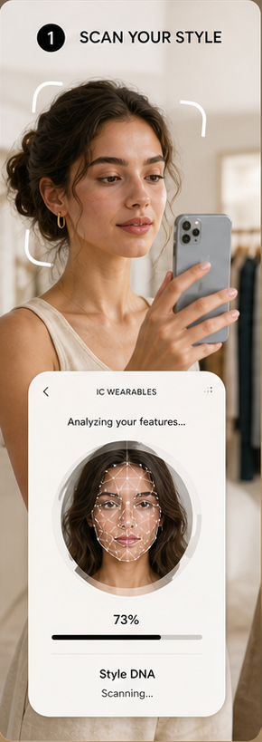
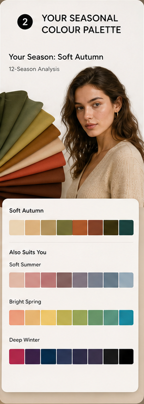
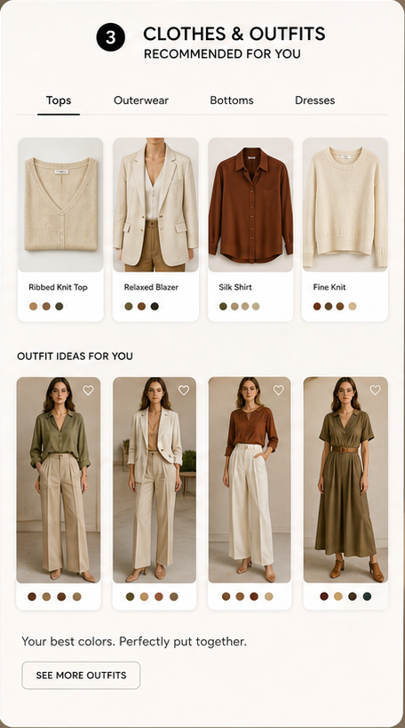

0.6 km - IFC boutique
HK$760
Terracotta satin blouse
Warm near-face colour with soft drape for Soft Autumn profiles.
AI styling, made personal
A private style read for women: colour season, face-aware beauty notes, body-shape fit, and pieces you can find nearby.
IC_wearables connects undertone, contrast, face shape, and wardrobe intent into one edit: the right near-face colour, the right silhouette, and the search terms to find it.
Scene 01
The profile starts with a guided photo read: skin undertone, visual contrast, face shape, body-shape fit, and occasion.

Scene 02
The palette output turns the season into clothes, accessories, makeup direction, and near-face colours that work together.

Scene 03
IC_wearables connects palette logic to outfit categories: tops, outerwear, trousers, dresses, bags, jewellery, and shoes.

Scene 04
IC_wearables turns the profile into an AI retail search: colour-safe pieces, fit tags, nearby stock, and price bands before you leave the house.
Warm near-face colour with soft drape for Soft Autumn profiles.
Lengthens the line and anchors lighter tops.
Face-brightening metal tone for work and evening looks.
Scene 05
The final step becomes a concise shopping brief: exact colour family, fit tags, search phrases, price band, and nearby boutique handoff.
Open the female demo accountWarm near-face lift for Soft Autumn profiles.
Clean vertical line with enough colour depth.
Beauty-aware accent for face brightness.
Seasonal palettes become tops, jewellery, makeup direction, eyewear, and hair-colour notes.
Shoulders, waist, hip line, and proportion goals become practical fit tags.
Less scrolling, better search terms, and a clean handoff to the demo profile.
Private demo
Jump into the hosted IC_avatar demo to test the profile readout, colour classifier, outfit edit, and shopping workflow.
Run a colour, fit, hair, and retail readout from the hosted demo.
Open female demo